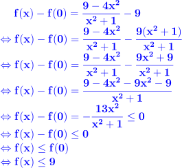

On note A (xA ; yA) et B (xB ; yB) les points d'intersection entre la courbe et, respectivement l'axe des abscisses et l'axe des ordonnées.
Puisque A (xA ; yA) appartient à (Ox) alors yA=0 donc on a: A (xA ; 0)
Deux valeurs possibles pour xA implique que la courbe représentative de la fonction f rencontre l'axe des abscisses deux fois. Dans l'ordre:
- au point A (1,5 ; 0)
- au point A' (-1,5 ; 0)
En raisonnant de la même manière:
Puisque B(xB;yB) appartient à (Oy) alors xB=0 donc on a: B(0;yB)
La courbe représentative de la fonction f rencontre l'axe des ordonnées au point B(0;9).
Dans cette question, on se propose de calculer f(x)-f(0).

On en déduit que 9 est le maximum de f et il est atteint en x=0.
Dans cette question, on se propose dans un premier temps d'étudier le signe de f(x)+4.
-4 semble être le minimum de la fonction f. Vérifions en quelle valeur ce minimum est atteint.
Il suffit de réoudre l'équation f(x)=-4

Cette équation n'a pas de solution réelle donc -4 n'est pas le minimum de la fonction f.
 -Numerics
-Numerics